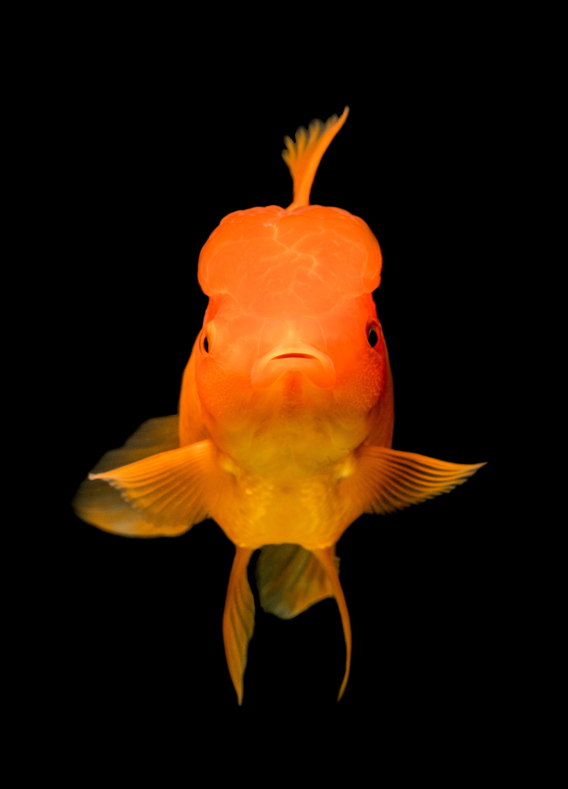

金魚（學名：Carassius auratus）是野生鯽魚演化而來的變種，原產於中國，現為常見的觀賞魚類。


四種類別
金魚是品種的總稱，又可依據其形態特徵的不同，
細分為各種品類，其中主要可將它們分為五類：
- 草種金魚:體形最似鯽魚，但顏色鮮艷，價格最低。
- 文種金魚:俯視時體型似篆體的文字型，體態和龍種金魚類似，差異點為眼球不突出，品種較多。
- 龍種金魚:金魚的典型品種，眼睛大而凸出，眼球特徵最為明顯，有四葉尾鰭。
- 蛋種金魚:體型呈蛋型渾圓。最大特徵是沒有背鰭，且眼球不凸出。
習性
金魚習慣生存於低溫水的環境，相較其他觀賞魚而言，抵抗力較強，對環境的要求不高，最佳的生存溫度約介於攝氏15至18℃之間。
主要食用的動物性餌料是水蚤，或人工合成的餌料。另外，由於金魚的心臟很小，魚類又非恆溫動物，故無法在晝夜溫差大的室外地區生存。
飼養須知
水質環境基本上以0.5%食鹽水飼養較佳。
另外，在飼養密度較高的環境下，建議加裝打水器以防金魚缺氧而死亡。
常見品種
- 和金
- 珠鱗
- 獅頭 
- 琉金

又有別名「和錦」，是明朝時以中國傳入日本的紅鯽魚為基礎培育出的品種，在品類眾多的金魚中算古老而常見的飼養基本款。又因體質強健，適應環境的能力強，便於一般人飼養，故從當代至今都是很受歡迎的觀賞魚之一。

珠鱗又被稱為「珍珠鱗」或「乒乓珍珠」，其因渾圓短小的身型和鱗片鈣化成珍珠狀而得名，由於憨態可掬的模樣和神情很可愛，而一直備受喜愛。不過也由於鱗片含有較多的鈣質容易掉落和受傷，所以在飼養上較和金的難度高。
獅頭型金魚的典型特徵即背上有隆起的背鰭，和頭上有如高帽般的肉瘤，
渾圓和奇特的長相讓獅頭成為金魚中熱門的品種之一，也是許多人心中對金魚的典型印象。

琉金，又名「鎦金」、「流金」，是由中國傳入的文魚經過日本人的改良後而誕生的品種，是金魚的代表品種之一。其特色是高背和近乎直立的背鰭，是適合從側面觀賞的魚類，花色多樣，抗病力和適應環境的能力很好，是受大眾歡迎也易於飼養的金魚品種之一。